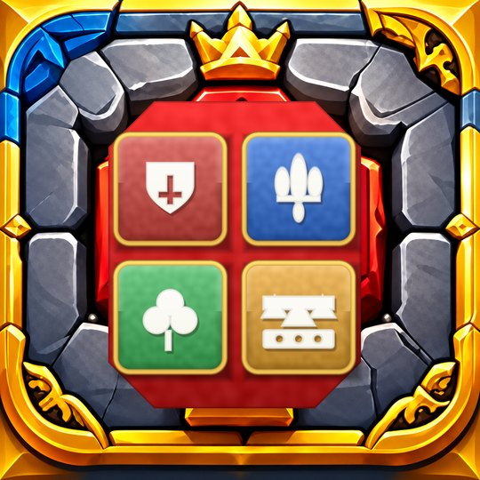

Royaume des Runes
X'tista' tistenna
- 180 livell f’6 reġjuni
- Kombos biex tikkatina
- Mingħajr kont, tintlagħab offline

Tasal dalwaqt fuq l-iPhone u Android
Iġbor ir-rużi, ikkatina l-kombos.
Tasal dalwaqt fuq AndroidIl-blokki tar-rużi jaqgħu fuq il-bord. Ċaqlaqhom u dawwarhom biex tiġbor rużi tal-istess kulur: jisparixxu u kollox jaqa’ ’l isfel.
180 livell f’6 reġjuni, mit-Torri tas-Saħħar sal-Kastell tas-Sema. Ikkatina kombos biex tikseb 3 stilel.
Royaume des Runes tasal dalwaqt fuq l-App Store għall-iPhone u fuq Android. Il-buttuna tat-tniżżil se tidher fil-quċċata ta' din il-paġna hekk kif joħroġ.
Royaume des Runes
Ibgħatilna email: contegamesstudio@gmail.com